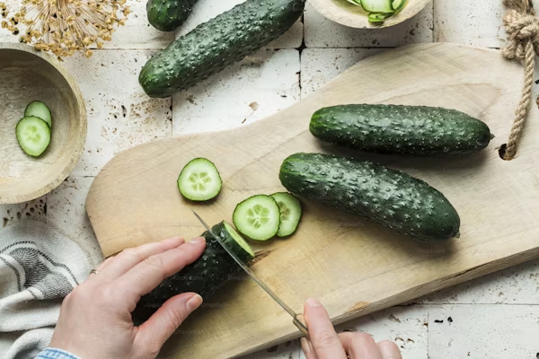
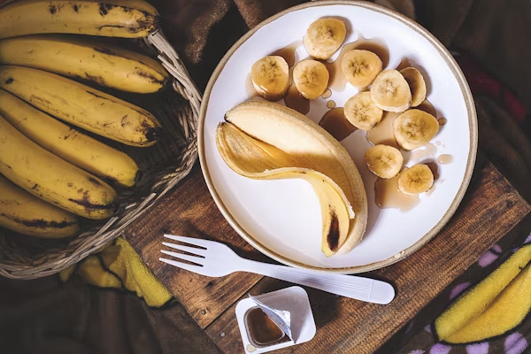
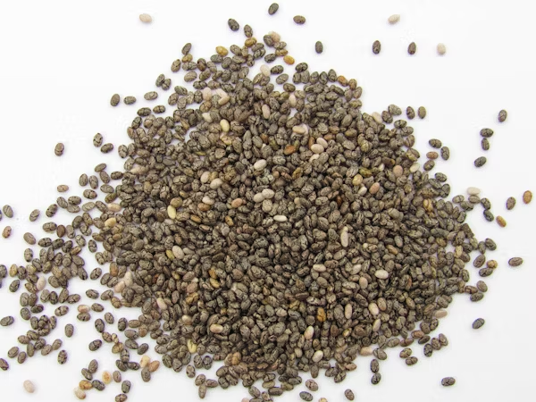
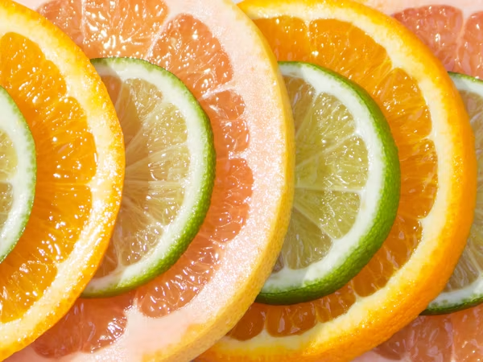
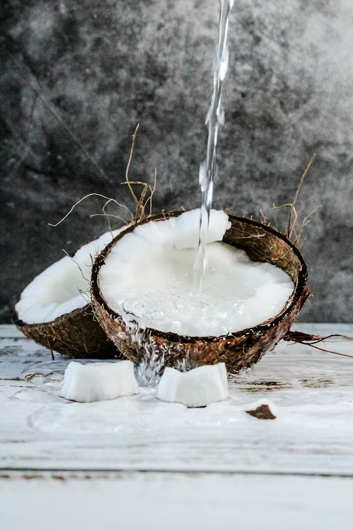

Quinoa Salad
The Green Detox Smoothie is a healthy drink rich in fiber and nutrients, perfect for cleansing the body and boosting energy. Made with fresh green vegetables, fruits, and a splash of lime, this smoothie is refreshing and packed with benefits.
Premium
Easy
5 Minutes Preparation
10 Minutes Cooking
653 Kcal Per Serving
Ingredients
 1 cup baby spinach
1 cup baby spinach

1/2 cup cucumber (diced)
 1/2 green apple (chopped)
1/2 green apple (chopped)

1/2 banana (sliced)

1 tablespoon chia seeds

Juice of 1/2 lime

1/2 cup coconut water
Instructions
- Add all ingredients into a blender.
- Blend until smooth and consistent.
- Pour into a glass and enjoy fresh!